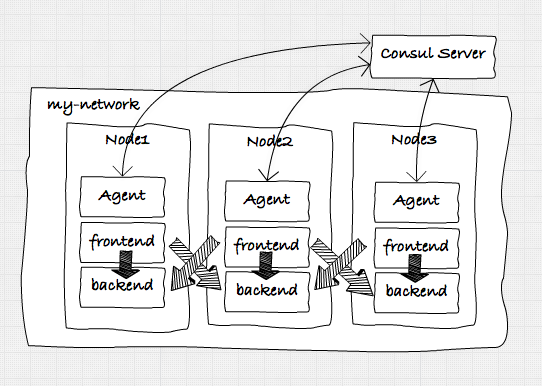
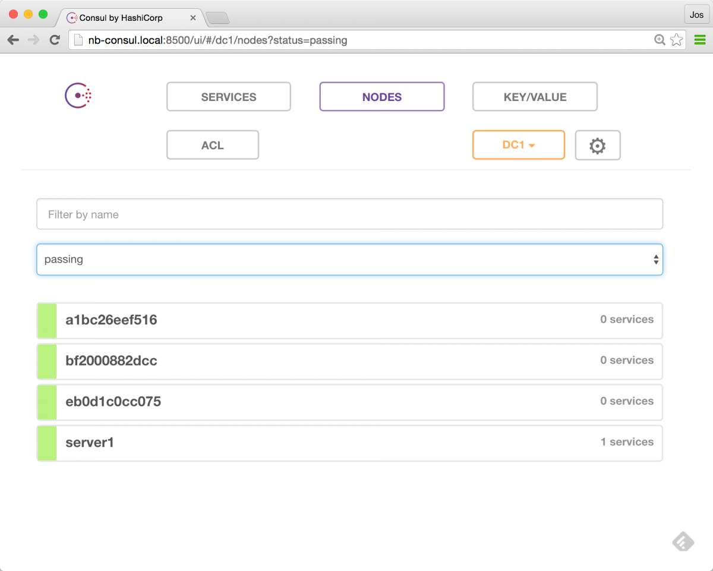

Service Discovery with Docker and Consul: part 1
During the last year I've become a big fan of using Consul for all things related to service discovery. If you're doing microservices you've probably ran into the issue that when the number of services you create increases it becomes more and more difficult to manage the communication between all these services. Consul provides a perfect fit for this problem. It provides an easy to use, open standards based (opinionated) approach to service discovery (and besides that provides a large set of other functions). I recently gave a presentation on how to do Service discovery in a microservices architecture using Consul, and got a couple of requests to explain a bit more about it. So in this article, and a couple of follow ups, I'll explain a bit more about how you can use Consul. I won't just focus on purely the service discovery part provided by Consul, but also show you a couple of other features provided by either Consul or one of the tools surrounding it.
For the other articles in this series you can look here:
Note that all the samples, docker files, etc. can be found in the following repo: https://github.com/josdirksen/next-build-consul. So instead of "copy & pasting" from this article just clone the repository.Getting started
In this first article we'll create a simple docker based architecture with a number of services that will communicate with one another using simple HTTP calls, and that will discover each other using Consul. Our initial target architecture looks a bit like this:

To accomplish all this we first need to take the following steps to set up an environment we can run the services in:
Note: I'm using docker-machine on my Mac to do all this. If you run Windows or Linux the commands might vary slightly. Let's hope that Docker for Mac (and Windows) quickly comes out of beta (https://blog.docker.com/2016/03/docker-for-mac-windows-beta), so we don't need this anymore...
- Create four docker-machines: One in which we'll run a Consul server, and three in which we'll run our individual services and a Consul agent.
- Start main consul server: We'll use a single Consul server (and multiple Consul agents, more on that later) to keep track of the running services and some docker related stuff.
- Setup docker swarm: To avoid having to deploy our services individually we'll use a Docker Swarm to manager the three nodes on which we'll run our services. In the rest of this article we'll use docker-compose to start and stop the individual services.
- Setup docker overlay network: If we want to have our services communicate with each other in a simple manner, we will create an overlay network. This will allow the components we deploy to docker to easily communicate with one other (since they'll share the same subnet)
- Start the Consul agents: Each node will have its own consul agent, which will monitor the health of the services on that node and communicate with the consul server.
Creating the docker-machines
So the first thing we'll do is create some docker-machines. First we'll create the docker-machine that'll hold our consul server. The reason we run this one first, is so that we can point the other docker-machines to consul running inside this container and use it for managing docker-swarm and the overlay network we want to use.
docker-machine create nb-consul --driver virtualbox
Before we start the Consul server, lets quickly look at the architecture behind Consul.
In this image you can see the two modes Consul can run in. It can run in Server mode or Agent mode. All the Servers talk to each other and decide who is the leader. An agent just talks to one of the servers and normally runs on the node that is also running the services. Note that the state between all the Servers and Agents within a cluster is shared. So when a service registers itself with one of the agents, that information is available to all the Servers and the Agents that are connected to one another.
For this set of articles we won't setup a cluster of Servers, but just use one. Now that we've got our docker-machine running, we can start the consul server. Before we start let me first show you a simple script that make switching between different docker-machines easier and the alias we use to avoid typing "docker-machine".
# quickly switch environments e.g: . dm-env nb-consul
$ cat ~/bin/dm-env
eval `docker-machine env $2 $1`
# avoid typing too much
$ alias dm
dm=docker-machine
So with these aliases in place, first we do a "dm-env nb-consul" to select the correct docker-machine.
Start the main consul machine
Next we get the ip address of this server and then we can start our Consul server like this.
# get the ip address
$
192.168.99.106
# use this ip address in the advertise
docker run -d --restart always -p 8300:8300 -p 8301:8301 -p 8301:8301/udp -p 8302:8302/udp \
-p 8302:8302 -p 8400:8400 -p 8500:8500 -p 53:53/udp -h server1 progrium/consul \
-server -bootstrap -ui-dir /ui -advertise $(dm ip nb-consul)
At this point we have our docker consul server running. Now lets create the other three servers on which we'll run our services.
Setup docker swarm
As you can see in the following commands, we're also creating a docker swarm cluster at the same time, and the "nb1" node is the swarm master.
docker-machine create -d virtualbox --swarm --swarm-master \
--swarm-discovery="consul://$(docker-machine ip nb-consul):8500" \
--engine-opt="cluster-store=consul://$(docker-machine ip nb-consul):8500" \
--engine-opt="cluster-advertise=eth1:2376" nb1
docker-machine create -d virtualbox --swarm \
--swarm-discovery="consul://$(docker-machine ip nb-consul):8500" \
--engine-opt="cluster-store=consul://$(docker-machine ip nb-consul):8500" \
--engine-opt="cluster-advertise=eth1:2376" nb2
docker-machine create -d virtualbox --swarm \
--swarm-discovery="consul://$(docker-machine ip nb-consul):8500" \
--engine-opt="cluster-store=consul://$(docker-machine ip nb-consul):8500" \
--engine-opt="cluster-advertise=eth1:2376" nb3
At this point we've got four docker-machines up and running. One is running a Consul master, and the other ones aren't doing much yet.
$ dm ls
NAME ACTIVE DRIVER STATE URL SWARM
nb1 - virtualbox Running tcp://192.168.99.110:2376 nb1 (master)
nb2 - virtualbox Running tcp://192.168.99.111:2376 nb1
nb3 - virtualbox Running tcp://192.168.99.112:2376 nb1
nb-consul * virtualbox Running tcp://192.168.99.106:2376
Before we continue with configuring the slaves, there is one more utility script that might come in handy:
$ cat addToHost
#!/usr/bin/env bash
$ cat addToHost
#!/usr/bin/env bash
update-docker-host(){
# clear existing docker.local entry from /etc/hosts
sudo sed -i "/[[:space:]]"${1}"\.local$/d" /etc/hosts
# get ip of running machine
export DOCKER_IP="$(docker-machine ip $1)"
# update /etc/hosts with docker machine ip
[[ -n $DOCKER_IP ]] && sudo /bin/bash -c "echo \"${DOCKER_IP} $1.local\" >> /etc/hosts"
}
update-docker-host nb1
update-docker-host nb2
update-docker-host nb3
update-docker-host nb-consul
This script adds the ip addresses of the docker-machines to your local "hosts" file. This means that we can simply access the docker hosts by just going to "http://nb-consul.local:8500" for instance.
Setup the docker network
In our scenario we want all our services to be able to communicate with one another. We have multiple docker hosts so we need to find an easy way to have services running in node "nb1" to be able to communicate with "nb2". The easiest way to accomplish this is to create a single network that is used by all the services running in the docker containers. To do this we create a simple "overlay" network like this:
# select the swarm master
$ dm-env nb1 --swarm
# create an overlay network the the name my-net
$ docker network create --driver overlay --subnet=10.0.9.0/24 my-net
And since we created this on our swarm master, this network will be available in all the members of our swarm. When we create our services later on, we'll connect those to this network, so that they all share the same subnet.
Start the consul agents
To start the consul agents, we're going to use docker-compose. The docker-compose file is very straightforward, and is just a simple way to avoid typing in all the launch commands (especially when you're doing live demos)
version: '2'
services:
agent-1:
image: progrium/consul
container_name: consul_agent_1
ports:
- 8300:8300
- 8301:8301
- 8301:8301/udp
- 8302:8302
- 8302:8302/udp
- 8400:8400
- 8500:8500
- 53:53/udp
environment:
- "constraint:node==nb1"
command: -ui-dir /ui -join 192.168.99.106 -advertise 192.168.99.110
networks:
default:
aliases:
- agent-1
agent-2:
image: progrium/consul
container_name: consul_agent_2
ports:
- 8300:8300
- 8301:8301
- 8301:8301/udp
- 8302:8302
- 8302:8302/udp
- 8400:8400
- 8500:8500
- 53:53/udp
environment:
- "constraint:node==nb2"
command: -ui-dir /ui -join 192.168.99.106 -advertise 192.168.99.111
networks:
default:
aliases:
- agent-2
agent-3:
image: progrium/consul
container_name: consul_agent_3
ports:
- 8300:8300
- 8301:8301
- 8301:8301/udp
- 8302:8302
- 8302:8302/udp
- 8400:8400
- 8500:8500
- 53:53/udp
environment:
- "constraint:node==nb3"
command: -ui-dir /ui -join 192.168.99.106 -advertise 192.168.99.112
networks:
default:
aliases:
- agent-3
networks:
default:
external:
name: my-net
Nothing to special in this file. The only thing you might notice it that we use explicit IP addresses in the commands to start the Consul agents. We could, easily, just use an environment variable for this, which is set through a simple bash script. But for this article we just specify the IP addresses of the relevant docker-machines. Make sure your "DOCKER_HOST" points to the docker swarm master and start the agents like this:
# start the agents
$ docker-compose -f docker-compose-agents.yml up -d
Creating consul_agent_3
Creating consul_agent_2
Creating consul_agent_1
# check what is running
$ docker ps --format '\t\t\t'
bf2000882dcc progrium/consul "/bin/start -ui-dir /" nb1/consul_agent_1
a1bc26eef516 progrium/consul "/bin/start -ui-dir /" nb2/consul_agent_2
eb0d1c0cc075 progrium/consul "/bin/start -ui-dir /" nb3/consul_agent_3
At this point we have a Consul server running in docker-machine "nb-consul" and we've got three agents running on our nodes. To validate our setup, let's open up the Consul server's interface: http://nb-consul.local:8500

And, as you can see, we've got 1 server running (our Consul Server), and the three agents. So at this point we can start adding our services, to get to this architecture:
Adding the services
The services in this case are just simple golang applications. I created a simple application that can run in frontend or in backend mode. In frontend mode it provides a minimal UI with a button to call a backend service, and in backend mode it provides a simple API that returns some information to the calling party, and it provides a simple UI showing some statistics. For convenience I've pushed this image to the docker hub (https://hub.docker.com/r/josdirksen/demo-service/) so you can easily use it without having to build from the source github repository.
As you can see in the previous architecture overview we want to start a frontend and a backend service on each of the nodes. We could do this manually, but since we've got docker-swarm we can easily do this through a single docker-compose file. If you want to see what this file looks like you can check the sources here (https://github.com/josdirksen/next-build-consul).
Lets first launch the services, and then we'll look at how they register themselves with Consul:
# make sure you select the swarm master
$ . dm-env nb1 --swarm
# now use docker-compose to run the backend services
$ docker-compose -f docker-compose-backend.yml up -d
Creating Backend2
Creating Backend3
Creating Backend1
# and use docker-compose to run the frontend services
$ docker-compose -f docker-compose-frontend.yml up -d
Creating Frontend1
Creating Frontend3
Creating Frontend2
# check in docker if everything is running
$ docker ps --format '\t\t\t'
65846be2e367 josdirksen/demo-service "/entrypoint.sh --typ" nb2/Frontend2
aedd80ab0889 josdirksen/demo-service "/entrypoint.sh --typ" nb3/Frontend3
d9c3b1d83b5e josdirksen/demo-service "/entrypoint.sh --typ" nb1/Frontend1
7c860403b257 josdirksen/demo-service "/entrypoint.sh --typ" nb1/Backend1
80632e910d33 josdirksen/demo-service "/entrypoint.sh --typ" nb3/Backend3
534da0670e13 josdirksen/demo-service "/entrypoint.sh --typ" nb2/Backend2
bf2000882dcc progrium/consul "/bin/start -ui-dir /" nb1/consul_agent_1
a1bc26eef516 progrium/consul "/bin/start -ui-dir /" nb2/consul_agent_2
eb0d1c0cc075 progrium/consul "/bin/start -ui-dir /" nb3/consul_agent_3
As you can see in the last output of "docker ps" we have three frontends, three backends, and three consul agents running. This is pretty much the architecute we're aiming for. We can also see this when we open up Consul:
As you can see we've got three frontend services and three backend services registered in Consul. If we open one of the backends we'll see some general information:
And we can use the frontend UI, to call one of our backends:
There are however a couple of questions we need to answer:
- Service registration: When we start a backend or frontend service, we see it appearing in Consul. How do we do this?
- Service discovery: And when we click the button on the frontend service a call is made to one of the backend services. How does the frontend know which service to call?
In the next sections we'll look a bit closer at these questions.
Service registration
First off, service registration. To register a service with Consul, we have to make a very simple REST call to our local consul-agent, which looks something like this:
{
"Name": "service1",
"address": "10.0.0.12",
"port": 8080,
"Check": {
"http": "http://10.0.0.12:8080/health",
"interval": "5s"
}
}
As you can see, we specify the name, address and port where the service can be found, and we add an additional health check. When the healtcheck returns something in the 200 range the service is marked as healthy and can be discoverd by other services. So how do we do this for our services. If you look at the sources for this example you can find the "script/entrypoint.sh" file, which looks like this:
#!/usr/bin/env bash
IP=`ip addr | grep -E 'eth0.*state UP' -A2 | tail -n 1 | awk '{print $2}' | cut -f1 -d '/'`
NAME="$2-service"
read -r -d '' MSG << EOM
{
"Name": "$NAME",
"address": "$IP",
"port": $PORT,
"Check": {
"http": "http://$IP:$PORT",
"interval": "5s"
}
}
EOM
curl -v -XPUT -d "$MSG" http://consul_agent_$SERVER_ID:8500/v1/agent/service/register && /app/main "$@"
What this script does, it that it creates the JSON to be sent to the consul-agent and before starting the main application it uses "curl" to send it. So when a service is started, it automatically registers itself to the local consul agent (note that you can also do this more automatically for instance using Consul Registrator. This works since we can just reference the local agent by its name, since it is in the same contaner. If you look closely you might see that we use a couple of environment variables here. These are passed in through the docker-compose file we use:
...
frontend-1:
image: josdirksen/demo-service
container_name: Frontend1
ports:
- 8090:8090
environment:
- "constraint:node==nb1"
- SERVER_ID=1
- SERVERNAME=Server1
- PORT=8090
command: /entrypoint.sh --type frontend
dns: 192.168.99.106
dns_search: service.consul
...
The interesting part here are the DNS entries. As you might remember the 192.168.99.106 is the address of our consul server. This means that we do DNS lookups against Consul (we could also have pointed to a consul agent).
Service discovery
With this setup we can just reference a service by name, and use DNS to resolve it. The following shows how this works.
# check which IPs are registered for the backend-service
# called from outside the container
$ dig @nb-consul.local backend-service.service.consul +short
10.0.9.7
10.0.9.8
10.0.9.6
# If we do this from a container, we can do just this
docker exec -ti nb2/Frontend2 ping backend-service
PING backend-service.service.consul (10.0.9.8): 56 data bytes
64 bytes from 10.0.9.8: icmp_seq=0 ttl=64 time=0.809 ms
64 bytes from 10.0.9.8: icmp_seq=1 ttl=64 time=0.636 ms
Cool right? We can discover service, by just using DNS. That also means that integrating this in our existing applications is really easy, since we can just rely on basic DNS resolving. For example, in the frontend service we call the backend using this code:
resp, err := http.Get("http://backend-service:8081")
if err != nil {
// handle error
fmt.Println(err)
} else {
defer resp.Body.Close()
body, _ := ioutil.ReadAll(resp.Body)
w.Header().Set("Content-Type",resp.Header.Get("Content-Type"))
w.Write(body)
}
This calls one of the backend services using DNS. We now also have some simple failover, since the DNS timetolive of Consul is set to 0. Applications might still do some caching, but it means that we already have some basic failover:
$ curl -s backend-service:8081
{"result" : {
"servername" : "Server1",
"querycount" : 778
}
}
# shutdown server 1 and do again, curl has a DNS cache of
# 1 minute, so you might need to wait a bit
$ curl -s backend-service:8081
{"result" : {
"servername" : "Server2",
"querycount" : 770
}
}
$ curl -s backend-service:8081
{"result" : {
"servername" : "Server2",
"querycount" : 771
}
}
Which of course also works for our frontend/golang application:
In the follow up to this article, we'll also show some more advanced failover, by introducing HAProxy as an intermediate for more advanced failover techniques.
Conclusions
That pretty much wraps it up for this first article. So in summary what have we done:
- We've setup a simple architecture using 4 docker nodes. 1 for the consul server, and three for our services.
- The services register themselves with Consul on service startup.
- We don't need to explicitly do something to enable service discovery. We can use standard DNS to lookup a service.
- Consul uses a TTL of 0 for DNS, and returns the available services using roundrobin. As you've seen, you can already use this for basic failover, when a DNS lookup fails.
Keep tuned for the follow up article somewhere in the coming weeks.